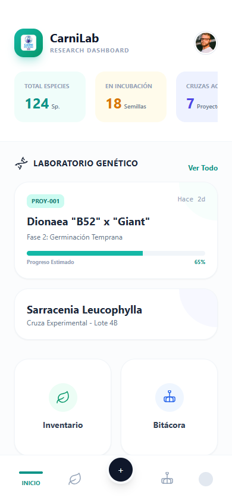
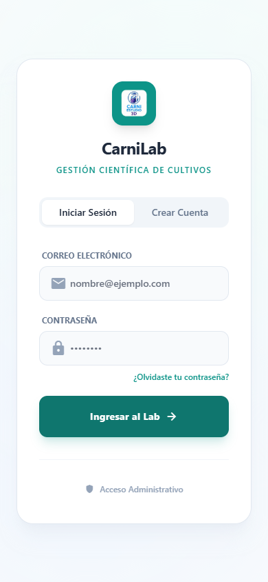

Manual de Usuario - CarniLab Móvil

Bienvenido a CarniLab, la aplicación definitiva para la gestión profesional y estética de tu colección de plantas carnívoras.
Este manual te guiará paso a paso por todas las funcionalidades de la aplicación, desde tus primeros pasos hasta el uso de herramientas avanzadas como la genética y el diario de cultivo inteligente.
Índice
- Registro e Inicio de Sesión
- Navegación Principal
- Gestión de Plantas (Inventario)
- Diario de Cultivo Profundo
- Cruzamientos y Genética
- Alertas y Tareas
- Escáner QR
- Perfil y Configuración
1. Registro e Inicio de Sesión
Al abrir CarniLab por primera vez, verás la pantalla de bienvenida.
Crear una cuenta
- Pulsa en "Crear Cuenta".
- Introduce un nombre de usuario único (esto es importante para compartir tu perfil más adelante).
- Ingresa tu correo electrónico y una contraseña segura.
- Pulsa "Registrarse". Recibirás una confirmación y entrarás directamente a la app.
Nota: Tu cuenta te da acceso a la sincronización en la nube, asegurando que nunca pierdas tus datos aunque cambies de teléfono.
2. Navegación Principal
La aplicación se controla mediante una barra de navegación en la parte inferior de la pantalla:

- 🏠 Home (Dashboard): Visión general de tu colección, alertas pendientes y clima.
- 🌿 Plantas: Tu inventario completo. Aquí es donde gestionas cada ejemplar.
- 📁 Diario / Genética: Acceso rápido al registro de actividades y herramientas de cría.
- 👤 Perfil: Tus datos, certificado de cultivador y configuraciones.
3. Gestión de Plantas (Inventario)
Es el corazón de la app. Aquí registras cada ser vivo de tu colección.

Añadir una Planta
- Ve a la sección Plantas (🌿) o pulsa el botón flotante "+".
- Rellena los datos básicos:
- Nombre: Apodo o ID (ej: "Dionaea 'B52' #1").
- Especie: Selecciona de la lista (Dionaea, Sarracenia, Nepenthes, etc.).
- Genética: (Opcional) Si conoces los padres.
- Procedencia: ¿Es comprada, semilla propia o esqueje?
- Foto: Sube una foto actual. Es crucial para el seguimiento visual.
- Guarda. ¡Tu planta ya tiene su ficha digital!
Detalles de la Planta
Pulsa sobre cualquier planta para ver su ficha completa:
- Historial: Timeline de eventos específicos de esa planta.
- Código QR: Genera un código único que puedes imprimir y pegar en la maceta.
- Editar/Borrar: Opciones disponibles en la esquina superior.
4. Diario de Cultivo Profundo (NUEVO)
La herramienta más potente para cultivadores serios. Registra riego, fertilización, poda y observaciones.

Vistas
- Lista (Timeline): Una línea de tiempo visual que conecta tus eventos cronológicamente.
- Calendario: Pulsa el icono de calendario arriba para ver una cuadrícula mensual. Los días con puntos de colores indican actividad.
Crear un Registro (Entrada)
Pulsa el botón "+" en la pantalla de Diario:
- Selección de Plantas (¡Novedad!):
- Puedes seleccionar una o múltiples plantas.
- Ejemplo: Si regaste 10 Sarracenias hoy, selecciónalas todas y crea una única entrada. ¡Ahorra tiempo!
- Tipo de Actividad:
- 💧 Riego: Hidratación.
- 🧪 Fertilización: Abono o alimentación.
- ✂️ Poda: Corte de hojas secas o trampas viejas.
- 👁️ Observación: Notas generales, plagas, etc.
- Datos de Crecimiento:
- Anota la Altura (cm) y número de Hojas si quieres ver gráficas de evolución.
- Fotos: Sube evidencia visual del estado actual.
5. Cruzamientos y Genética
Gestiona tus proyectos de hibridación.

- Accede desde el menú principal o Dashboard -> Genética.
- Nuevo Cruce:
- Selecciona Madre (productora de semillas) y Padre (donante de polen).
- Fecha de polinización.
- Seguimiento:
- Marca el estado: Polinizado > Cosechado > Sembrado > Germinado.
- El sistema calcula automáticamente el código del cruce.
6. Alertas y Tareas
Nunca olvides un riego.

- El sistema te sugerirá alertas basadas en la especie.
- En el Dashboard, verás las "Tareas para Hoy".
- Al completar una tarea, puedes convertirla automáticamente en una entrada del Diario.
7. Escáner QR
Cada planta tiene un DNI único.
- En la app, hay un icono de Escáner (cámara) en la esquina superior.
- Apunta a la etiqueta QR de una planta.
- ¡Magia! Te llevará directamente a la ficha de esa planta.
8. Perfil y Configuración

- Vivero Online: Si tienes activado el modo "Público", otros usuarios pueden ver las plantas que marques como disponibles.
- Certificado: CarniLab genera un "Certificado de Cultivador" estético que puedes compartir.
¡Feliz cultivo! 🌱